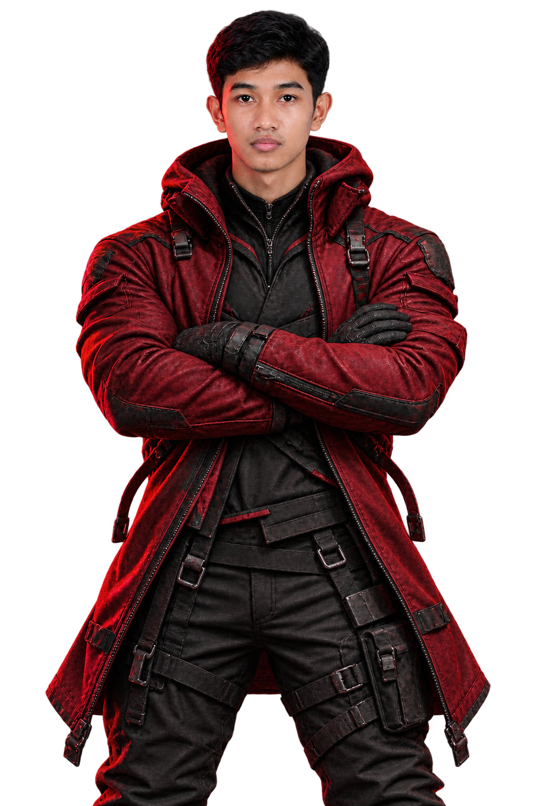

FEATURED PROJECT01 / 05
SMART CHOMKA/ DURIANGUARD
A five-class durian leaf disease classifier built with transfer learning. Exported to ONNX for browser inference in a Khmer-language farming app.
TRY THE LIVE APP
some place
are not
for you.
Turning what I learn
into things I can build.
I study Data Science at the Institute of Technology of Cambodia, in the Department of Applied Mathematics and Statistics (AMS).
I build machine learning and web applications, from model training and evaluation to usable interfaces. My projects also explore connected devices and automation.
Exploring the space between data, intelligence, and everyday life.
A five-class durian leaf disease classifier built with transfer learning. Exported to ONNX for browser inference in a Khmer-language farming app.
TRY THE LIVE APPA 48-hour air quality forecasting project for Phnom Penh, using air quality and weather data to explore deep learning prediction models.
A sensor and microcontroller system that displays and communicates monitoring data in real time.
An ESP32-based farm irrigation system that automates crop watering. Farmers can control irrigation remotely through an ESP-CYD device or their phone.
A smart socket that monitors voltage, current, and temperature. TinyML forecasts usage costs, and automatic shutoff turns the socket off when it is not in use.
Have something in mind?
Reach me by email or Telegram.